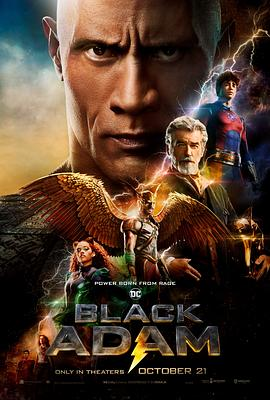

黑亚当 / Black Adam
又名：霹雳亚当
DC的超级英雄怎么就要么黑要么金，非常的重复感。剧情也是挺无厘头，看完我还是不知道黑亚当跟他儿子到底谁和巫师派有关系。
作品信息
| 导演 | 佐米·希尔拉 |
| 编剧 | 亚当·希泰凯尔 / 罗里·海恩斯 / 苏哈·诺什瓦尼 / 比尔·帕克 / C·C·贝克 |
| 主演 | 道恩·强森 / 阿尔迪斯·霍吉 / 皮尔斯·布鲁斯南 / 莎拉·夏希 / 诺亚·琴蒂内奥 / 昆泰莎·斯文戴尔 / 马尔万·肯扎里 / 博德希·萨邦圭 / 穆罕默德·阿米尔 / 詹姆斯·库萨蒂-莫耶尔 / 哈隆·克里斯蒂安 / 本杰明·帕特森 / 奥德娅·哈尔维 / 乌利·拉图基孚 / 詹尼佛·霍兰德 / 亨利·温克勒 / 哈伊姆·杰拉菲 / 杰曼·翰苏 / 桑娜·海恩斯 / 托内亚·斯图尔特 / 帕特里克·萨邦圭 / 约瑟夫·盖特 / 杰梅因·里弗斯 / 里贾纳·陈婷 / 卡梅隆·莫伊尔 / 德里克·罗素 / 小安杰尔·罗萨里奥 / 克里斯托弗·马修·库克 / 娜塔莉·伯恩 / 亨利·卡维尔 / 维奥拉·戴维斯 / 施奎塔·詹姆斯 / 拉希姆·赖利 |
| 类型 | 动作 / 科幻 / 奇幻 / 冒险 |
| 制片国家/地区 | 美国 / 加拿大 / 新西兰 / 匈牙利 |
| 语言 | 英语 |
| 上映日期 | 2022-10-19(法国) / 2022-10-21(美国) |
| 片长 | 125分钟 |
| IMDb | tt6443346 |
说过什么
2023-04-09 09:55:48
广播 · 看过
DC的超级英雄怎么就要么黑要么金，非常的重复感。剧情也是挺无厘头，看完我还是不知道黑亚当跟他儿子到底谁和巫师派有关系。
2022-02-10 06:00:17
广播 · 想看
最后一次看到是 2026-08-01T11:04:52+10:00 · 豆瓣原页